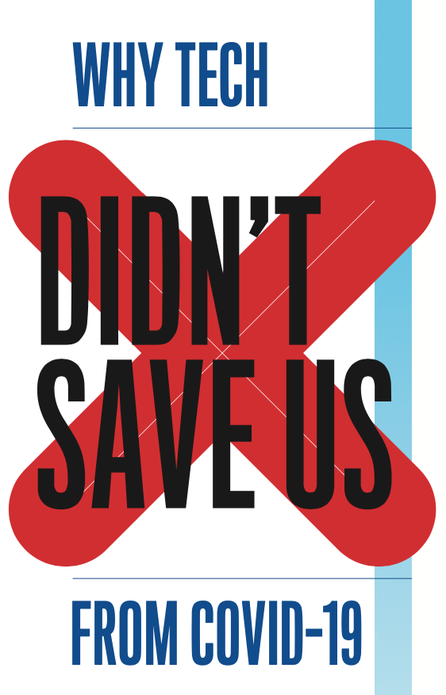

科技阅读
教学要点
设立「世界」和「我的学习」两个学习模块，通过教师的讲解和引领，学生将学习使用系统的方法，实践并完成以下任务：
- 识：了解科技领域的真实发展情况，理解相关领域的核心概念，开拓视野；
- 思：对涉及科技、人与社会的复杂问题，做深入的批判性思考；
- 立：聚焦具体领域，进行个性化探索和分析，尝试树立未来求学方向。
关于《麻省理工技术回顾》
简称《技术回顾》， 是麻省理工学院的校刊，于1890年代创办，聚焦科技、报道社会，是目前全球范围内领先的科技媒体。
她的文风朴实简练，内容丰富客观，分析精辟入理，观点独立多元。被人们视为难得的知识宝库。
她的文献分为两种：
- 期刊综述：针对系列科技主题，深入调研报道，呈现事实，剖析其中的问题和挑战；
- 新闻报道：追踪科技时事，及时更新相关发展。
她报道的科技主题包括：
- 人工智能
- 生物科技
- 区块链
- 气候变化
- 计算技术
- 人与科技
- 技术政策
- 智慧城市
- 空间技术
本课将其作为教材，精选核心文章进行讲解、讨论，并在其基础上布置分析和综述两类作业。
模块1：世界
识
通过阅读，
- 认识事实：不仅是科技概念，也关于人和社会；
- 理解观点：不止于自我和眼前，更考虑不同立场、不同视角和对未来的影响；
- 在这步中，将一并学习和理解英文文章中的一些语言难点和背景知识。
思
每位同学将各自选定某个角色，做深入的批判性思考:
- 摆事实
- 整理支持性论据，清楚地加以归纳、说明
- 可进一步搜索《技术回顾》之外的信息，扩展新论据
- 讲道理
- 使用比较、论证、举例等方法
- 提出自己的结论和主张
- 结论符合角色立场，为自己的角色而主张
- 探索
- 归纳非支持性的论据和存在争议的观点
- 提出新的未解决或未知的问题
上述任务，学生将提交分析作业。
文章示例
《面对新冠：为什么科技没能拯救我们？》

任务模板
- 文中呈现的事实：待填
- 作者的观点：待填
- 我选定的角色：
- [x] 科研基金管理人员
- [ ] 科研人员
- [ ] 居住在疾病高风险地区的学生
- 我的结论和主张：待填
- 支持结论和主张的论据和论述：待填
- 非支持性论据和争议的观点：待填
- 新问题：待填
模块2：我的学习
立
根据学生自己的兴趣或疑问，选取一个科技主题或交叉领域
- 提出自己未来的学习方向，尽量具体；
- 讲解原因；
- 听取其他同学或老师的观点和建议；
- 进一步探索、收集相关信息；
- 撰写一篇有关在该主题或交叉领域进行学习的综述作业。
进度计划
- 每周2次课程，计划12周，共24节课；
- 前18节课，模块1（将集中在人工智能、生物科技、人与科技三个主题）；
- 后6节课，模块2。
教师
张澎，麻省理工学院航空航天和技术政策双硕士毕业，先在中航工业从事技术产品开发和非洲市场开拓工作，后创业从事软件产品研发工作。近三年，开始教授英文科技阅读和编程课程，学生和家长反馈好，教学扎实、富启发性，同时擅于和学生沟通，挖掘并发展学生潜力。
可加微信：